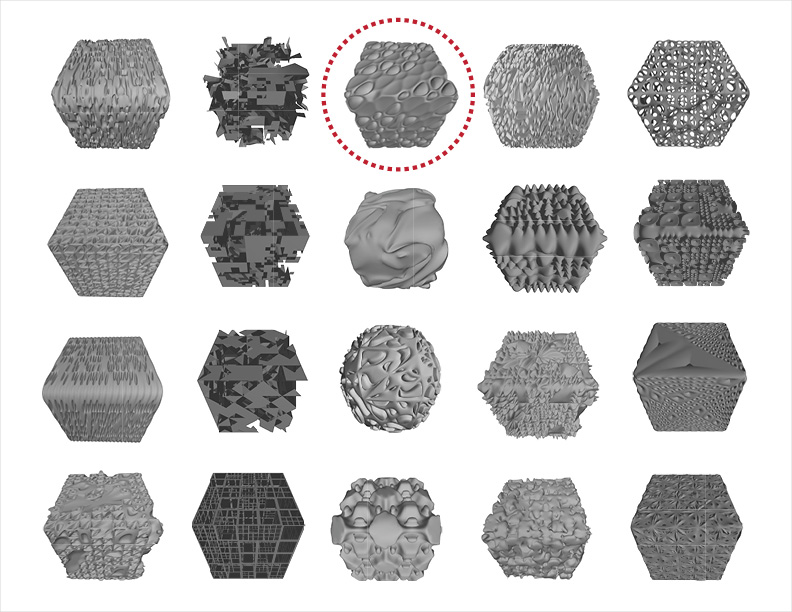
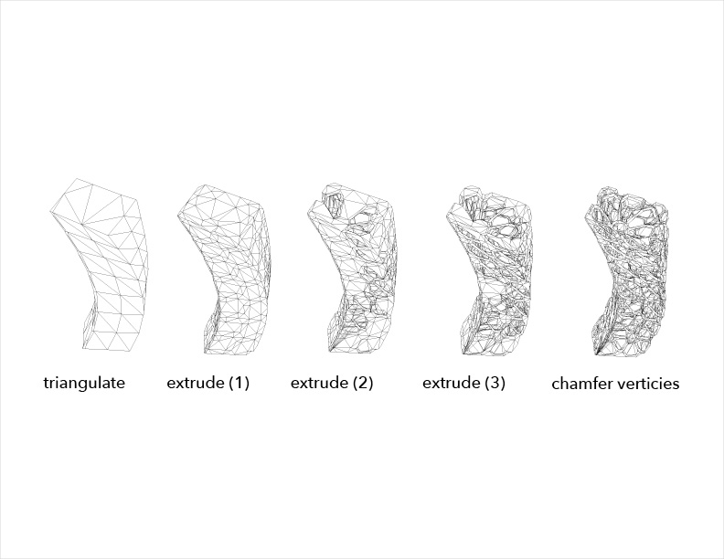
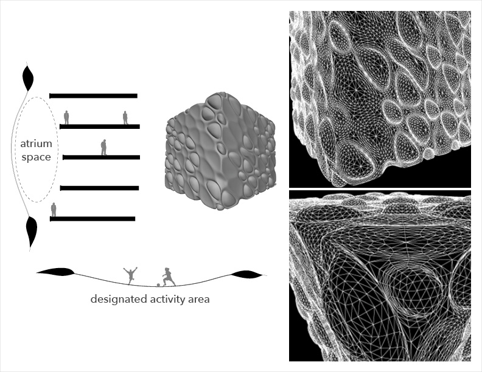
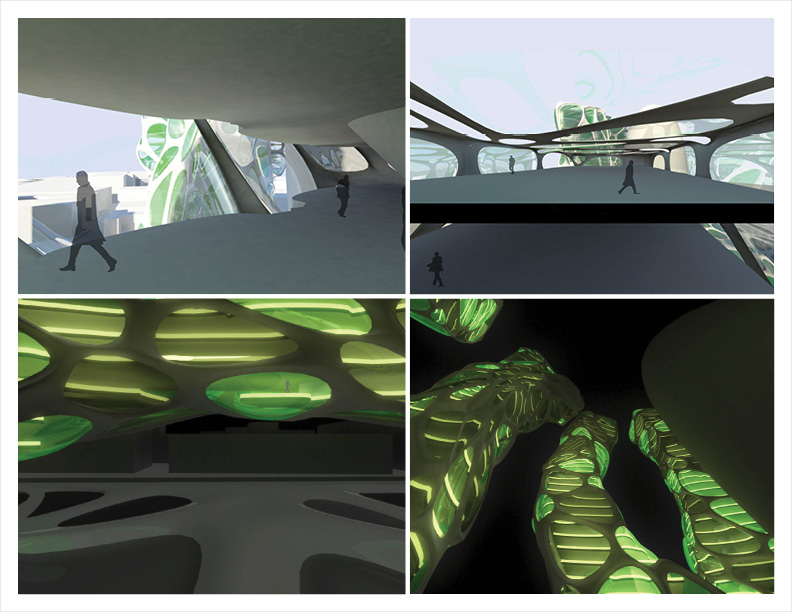
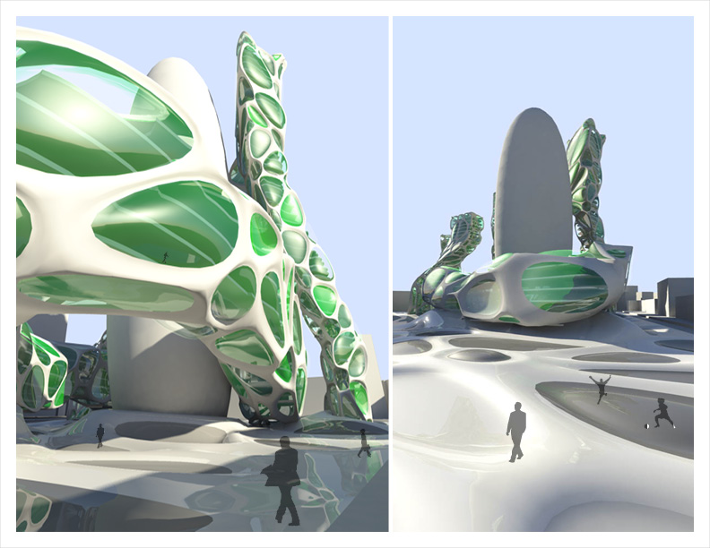
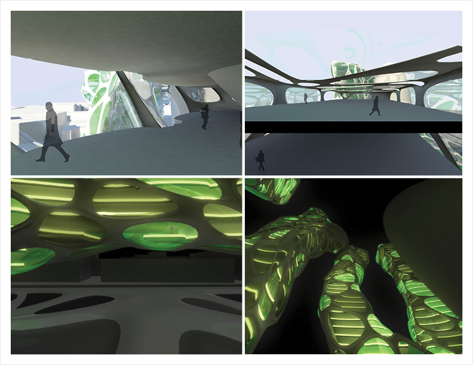
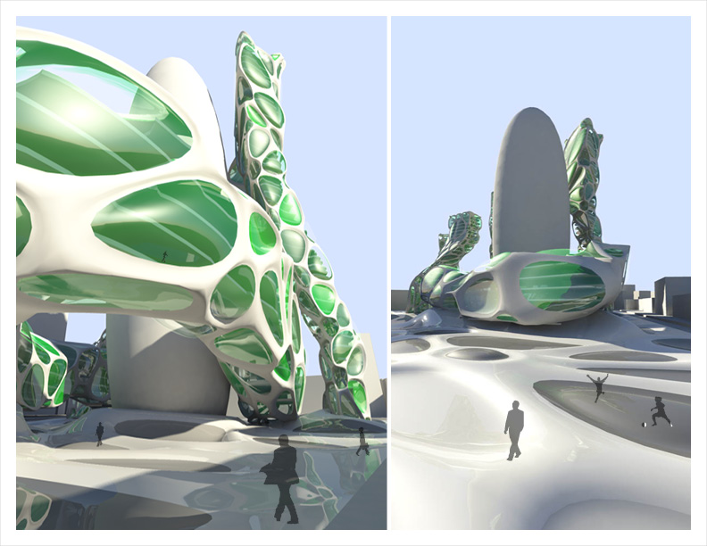

Commerce Centre
This speculative design was an exploration of digital modeling techniques for developing architectural forms and patterns. A resulting pattern was chosen and then hypothetically applied as a building structural system, facade, and ground condition.The Process

Exploration
Several distinct patterns were explored and developed using 3D modeling software, Maya. Each pattern was derived from a distinct set of physically-modifying commands applied in a specific order.

Families
Once several patterns had been developed, they were organized into 'families' of similar physical qualities when applied to a cubic surface. One pattern was chosen for further exploration, specifically because of its ability to handle edges and corners.

Application
The chosen pattern, with its specific set of modifying commands, was applied in sequence to a generic building form.
Structural Development
Translating the pattern into an architectural system entailed a exoskeletal stucture which was bisected by floorplates and then enclosed by concave and convex glass lenses.

Bump
When applied as a facade, the bump pattern creates spaces that can be opportunities for visual connection between inhabitants and air circulations. When applied as a ground condition, it demarcates spaces for specific activities.
Prototyping
Rapid prototyping was used to quickly test the textural qualities of the pattern. The physical representation was used for understanding the qualties of the applied pattern in context and communicating that with others in presentation.

Site
Application of this pattern to the site, located around the 30 St Mary Axe building in London, also known as 'The Gherkin', requires the demolition of existing buildings around the site and projection of the pattern as a ground condition. The site will also serve as a transit hub for automobiles and the London underground. 


